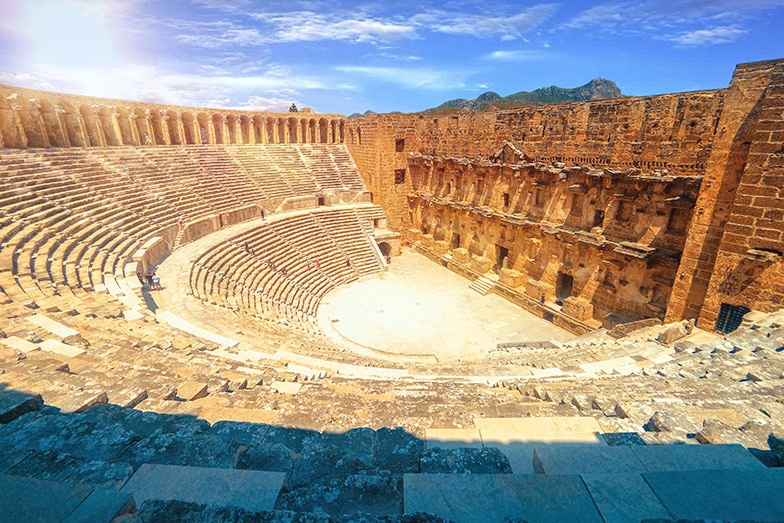
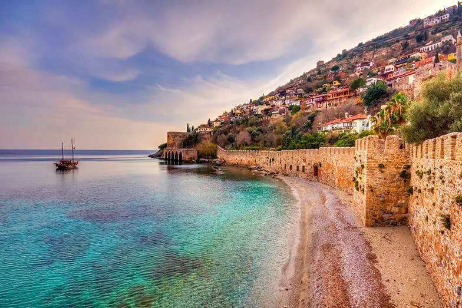
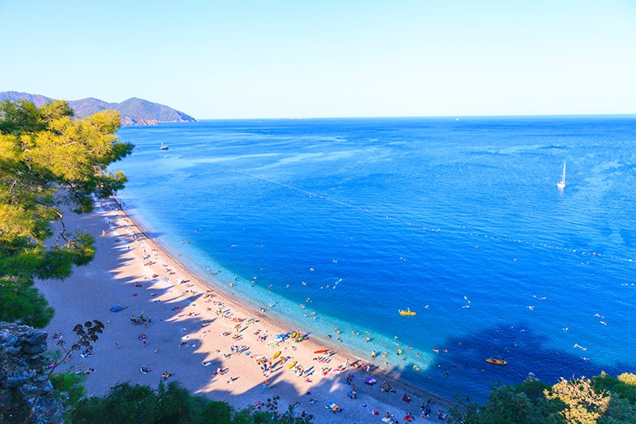
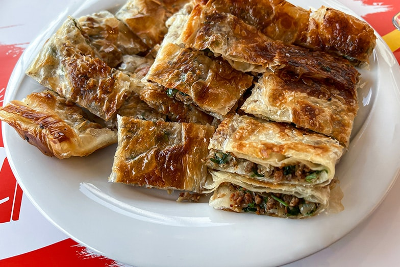

Tr
Tr  Ar
Ar  Es
Es AntalyaAntalya is a city located in the Mediterranean region of Türkiye.
History of Antalya
As noted, Antalya is a key tourism destination for its beaches and resorts. But its history is also fascinating. “Antalya” is derived from “Attalus”, the kingdom founded by Attalus II of Pergamon about two thousand years ago. After the kingdom’s demise, the area remained independent until joining territories of the Roman Empire. As coastal Mediterranean city with fertile lands, Antalya has always been an attractive asset to empires throughout history, including the Byzantines, Seljuks and Ottomans. The legacy of such empires has left Antalya with a plethora of ancient cities and archaeological treasures.
A Paradise on Earth: Antalya
Any visit to Antalya begins with the joyous realization that it is warm and fragrant, with blooming flowers and fresh sea breezes. The area draws the most visitors during the summer, due to its wide beaches. But its mild climate ensures that any time of the year is pleasant, with the spring months offering a less intense heat and the winter season delivering refreshing rainfall.
Historical Places in Antalya
The Temple of Apollo, known to have been built around 150 AD.
Let’s begin with a roundup of Antalya’s impressive historical landmarks.
Ancient Cities In Antalya
Aspendos Antique Theatre, in the Serik district of Antalya.
The beautiful ancient cities in Antalya are valuable for the historical background they provide, and an experience that should not be missed. As it is impossible to visit all of them within a few days, you can choose your route according to where you are staying.
Antalya’s most notable ancient cities are listed below:
- The Ancient City of Side
- Perge Ancient City
- Ancient City of Aspendos
- Termessos Ancient City
- Sillyon Ancient City
- Selge Ancient City
- Ancient City of Lybre
- Phaselis (Faselis) Ancient City
- Olympos Ancient City
- Limyra Ancient City
- Myra Ancient City
- Simena Ancient City
- Theimussa Ancient City
Kaleiçi
The historical Kaleiçi, located in the city center of Antalya.
Nestled in the heart of the city of Antalya is Kaleiçi, the seafront old town. Featuring stone houses, narrow streets, tropical flowers and citrus trees, this lovely neighborhood also hosts authentic cafes, boutique hotels, and some of the city’s most iconic structures.
Yivliminare Mosque
In the historic Kaleiçi district, the Seljuk-style Yivliminare Mosque dates from the thirteenth century. The complex includes the mosque and its distinctive fluted minaret, as well as mausoleums, a madrasah, and a Mevlevi Dervish lodge. It is one of Antalya’s most popular tourist attractions, and was inscribed in the Tentative list of World Heritage Sites in Türkiye in 2016.
Hadrian’s Gate
Also known as Üçkapılar, Hadrian’s Gate is a remarkable structure erected in 130 AD by the Roman emperor Hadrianus. The gate is the symbolic entrance to Kaleiçi and is one of Antalya’s most significant preserved historical monuments. It also has a stunning architectural design, with two colonnaded facades, three entry arches rising above four pylons and a tower standing on either side.
Museums In Antalya
Stature of a Greek warrior exhibited in the Antalya Museum.
With so much history, it is only natural that Antalya has many museums. For those with limited time, we suggest the Antalya Museum, which is also one of the largest and most important museums in Türkiye.
The Antalya Museum
Also known as the Antalya Museum of Archaeology, the Antalya Museum was founded in 1922 by Süleyman Fikri Erten. The museum includes 13 exhibition halls and an open-air gallery, with collections that range from the Neolithic age to the Ottoman era. The children’s section has displays of children’s toys throughout the ages, and hosts various workshops and sessions designed to stimulate youngsters’ interest in museums and history.
Natural Beauties of Antalya
Olympos Beach, the most beautiful state of nature in Antalya.
In the province of Antalya, nature constantly flaunts its beauty. In addition to the region’s beaches and azure coastlines, there are many natural wonders and scenic landscapes. We’ve listed some of the highlights below.
Köprülü Canyon National Park
Set near the Köprüçay River and Selge Ancient City, within Antalya’s Manavgat district, the Köprülü Canyon is a spectacular natural wonder – at 14 kilometers, it is one of Türkiye’s longest canyons. The canyon runs through the Taurus Mountains and features two historical bridges, abundant groundwater and breathtaking views. It is popular for activities such as rafting and trekking.
Famous Waterfalls of Antalya
Antalya is sometimes called the “region of waterfalls.” In fact, a few of the waterfalls are within the city limits: the Upper Düden and Lower Düden waterfalls are around eight kilometers from Antalya’s city center. The Kurşunlu Waterfalls is about 11 kilometers from the Antalya airport. The Manavgat and Sapadere waterfalls are farther from the city – but worth the drive.
Karain Cave
One of Türkiye’s largest natural karst caves is the Karain Cave. Inhabited by humans at one point, the cave has served as a historical bridge from the Paleolithic period. It is in the Yağca area, about five or six kilometers from the Antalya-Burdur highway. The nearby Karain Museum has a collection of artefacts from the cave.
Beaches in Antalya
And now, let’s discuss Antalya’s best-known feature: its stunning beaches! This coastal province is home to many beautiful beaches; we’ve listed some of our favorite spots below.
If you’re spending time on the Kaş side of Antalya, then Kaputaş Beach offers a delightful blend of azure sea and a natural ambiance. The lively Konyaaltı Beach is a terrific urban alternative and easily accessible – while this public beach does get busy during the summer months, it is usually quite calm in the early mornings. Another good choice near the city center is Lara Beach, standing out with its soft, golden yellow sand. Further away, Olympos and Adrasan beaches are popular destinations.
Local Products: Dining in Antalya
Serpme börek, a type of pastry, one of the local dishes of Antalya.
One of the most enjoyable aspects of traveling is eating. Antalya’s cuisine is diverse, with dishes and restaurants that appeal to a range of preferences and taste. Meat dishes such as çöp şiş (grilled pieces of meat on wooden skewers) and meatballs are popular, as is seafood. The region’s famous salads and olive oil dishes also stand out. To whet your appetite, we’ve listed a few of the area’s local specialties below.
- Antalya bean salad with tahini
- Serpme börek (a type of pastry)
- Burnt milk ice cream
- Hibeş (a type of appetizer)
- Bağaça (sesame- and cinnamon-flavored pastry)
- Pumpkin dessert
Where To Stay In Antalya
As a major tourist center, Antalya provides a wide variety of accommodation options. Each district offerings range from five-star and boutique hotels to pensions and hostels. With your personal assistant, you can choose the best zetaworld package for your accomodation and treatment.


 WhatSapp Chat ...
WhatSapp Chat ...